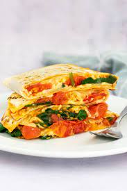

Spinach quesadilla

Description
This is a easy to make and delicious quesadilla with only a few ingredients
Ingredients
- Wraps
- Tomato cherry
- Spinach
- Cheese
- Bacon
Steps
- Cut the tomatoes in half
- Put the tomatoes in a pan and cook them until they start to peel
- introduce the Spinach and cook until the leaves have shrunk
- Remove the contents of the pan and cook the Bacon until it is crunchy
- Heat up the wraps in another pan and put the tomatoes, spinach and bacon in it and seal it with the cheese
- Enjoy!!